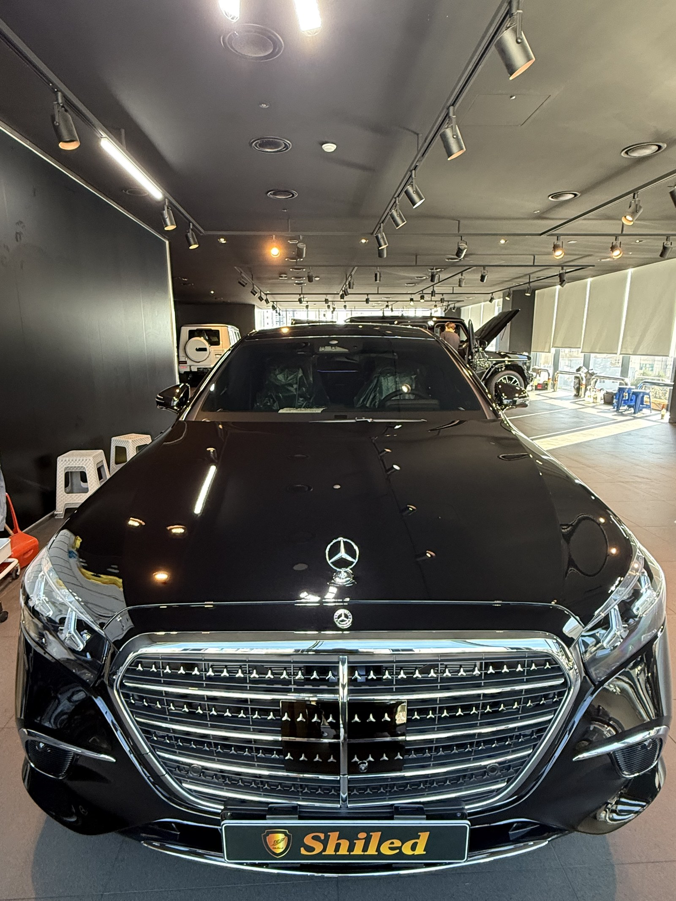
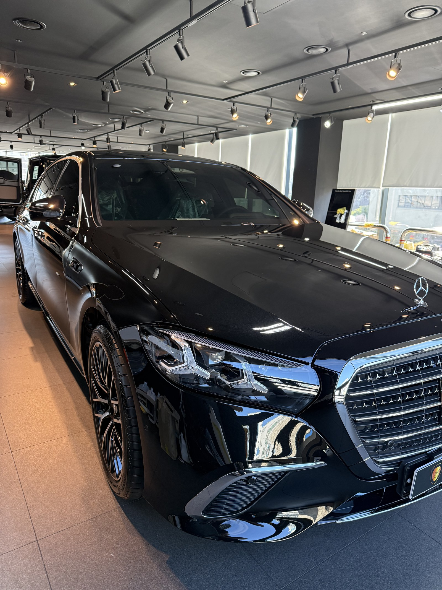
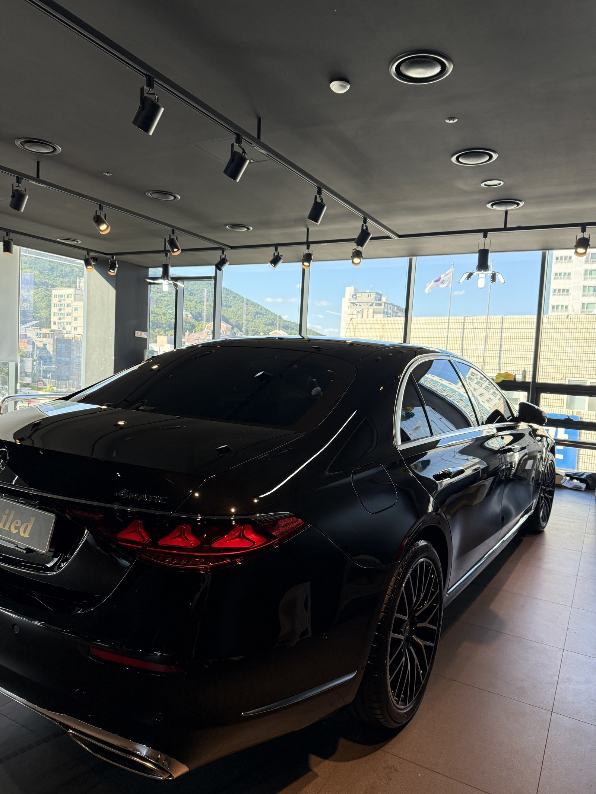
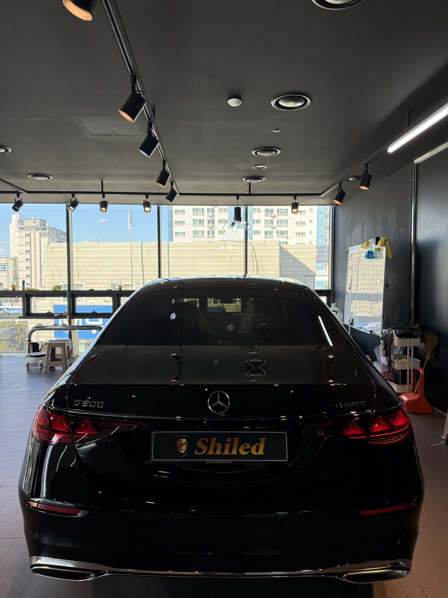
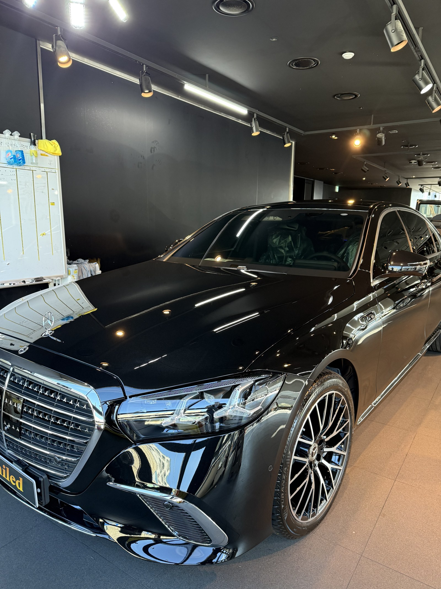
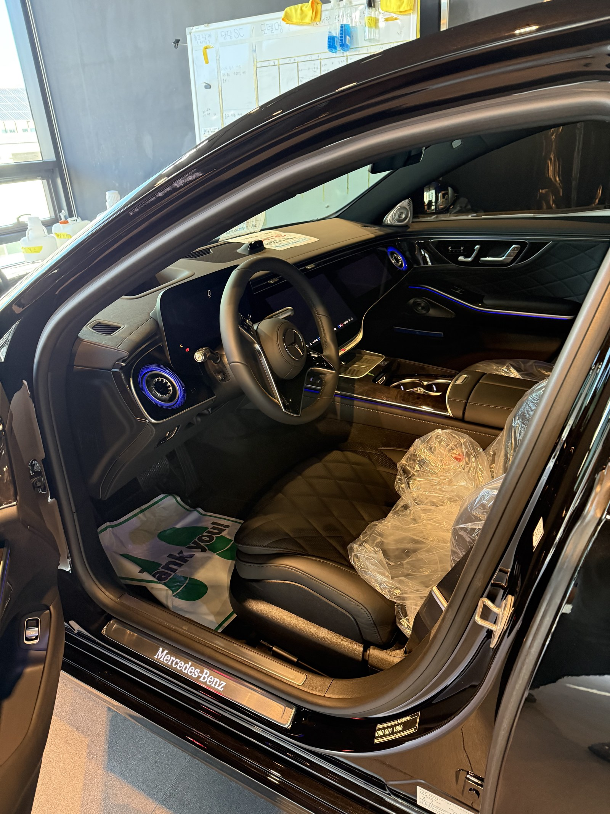
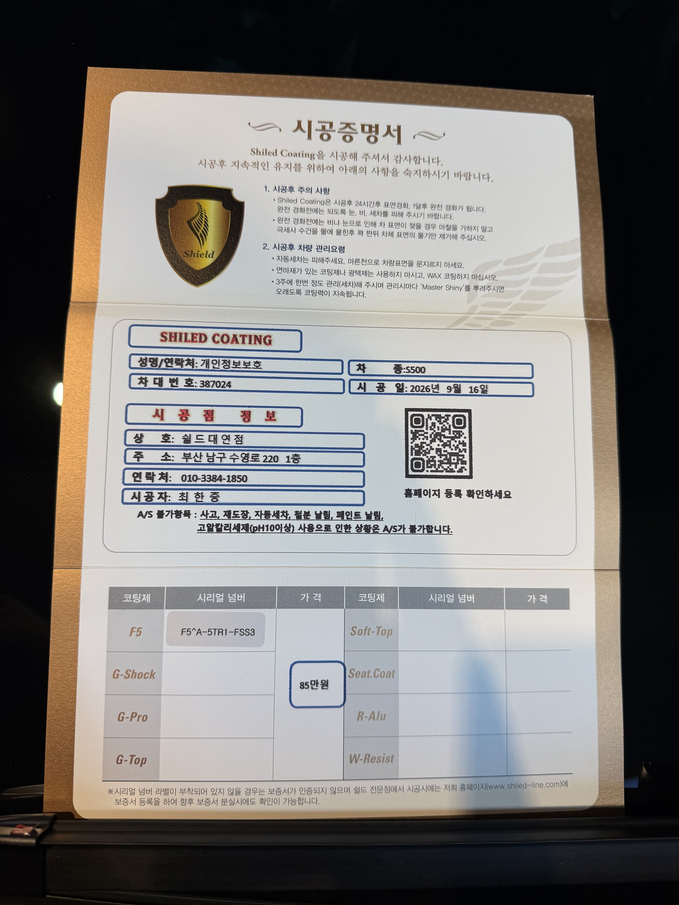

벤츠 S500, 검정입니다. 아직 출고 전, 새 차입니다.
부산 유리막코팅으로 출고 전 F5 유리막코팅을 진행했습니다.

플래그십 세단일수록 도장면이 넓게 드러난다
차체가 크고 평평한 면이 넓어 도장 상태가 한눈에 드러납니다.
후드부터 루프까지 이어지는 긴 곡면은 작은 얼룩이나 스크래치도 반사광에 그대로 걸립니다. 출고 직후 가장 깨끗한 상태에서 F5를 올려야 이후 세차·운행으로 생기는 미세 손상을 최대한 늦출 수 있습니다.

세로바 그릴, 자세히 보면 다릅니다
이 차는 마이바흐가 아닌 일반 S클래스의 세로바 그릴입니다.
마이바흐는 세로바가 더 굵고 조밀하게 배열되며 전용 엠블럼이 들어갑니다. 같은 세로바 구성이라도 여백과 배치를 보면 등급 차이가 드러납니다. 검정 도장에 F5를 올리면 이런 크롬 디테일과의 대비가 훨씬 선명해집니다. 코팅제는 대표가 화학공학 전공으로 직접 개발·제조한 제품입니다.
기술자의 팁
신차라고 바로 코팅을 올리지 않습니다. 운송·보관 중 묻은 미세 오염을 디테일링 세차와 탈지로 걷어낸 뒤에 올립니다. 깨끗한 바탕 위에 올려야 코팅이 제대로 밀착합니다.

후면 라인까지 매끄럽게
리어램프부터 트렁크 라인까지, 검정 특유의 깊이감이 그대로 살아 있습니다.
플래그십 세단은 후면 비율이 시각적으로 중요한 만큼, 트렁크 리드와 범퍼 경계까지 이음매 없이 F5를 마감했습니다.


실내도 신차 그대로 관리합니다
출고 전 차량은 안팎 컨디션을 함께 정리합니다.
실내는 아직 시트와 도어 스커프까지 보호 커버가 씌워진 신차 그대로입니다. 외부 도장은 F5로 윤기를 잡고, 인도 순간까지 깨끗한 상태를 유지합니다.

시공증명서를 함께 드립니다
모든 시공 차량에 시공증명서를 드립니다.
차종·시공일·코팅제 시리얼 번호가 적혀 있고, 홈페이지에 등록해 보증을 받으실 수 있습니다. 이 차는 F5 코팅으로 기록돼 있습니다.

차종·시공일·코팅제 시리얼이 기재된 시공증명서
자주 묻는 질문
Q. S클래스 같은 플래그십 세단도 신차코팅이 필요한가요?
A. 오히려 더 필요합니다. 차체가 크고 평평한 면이 넓어 도장 상태가 한눈에 드러납니다. 출고 직후 가장 깨끗한 상태에서 코팅을 올려야 이후 생기는 미세 스크래치를 줄일 수 있습니다.
Q. 검정 세단에는 어떤 코팅이 좋나요?
A. 이 차는 F5로 진행했습니다. F5는 색감 깊이를 끌어올려 글로시함을 극대화하는 코팅으로, 검정에 젖은 듯한 윤기를 더해 더 진하고 도톰하게 보이게 합니다.
Q. 마이바흐 그릴과 일반 세로바 그릴은 어떻게 다른가요?
A. 마이바흐는 세로바가 더 굵고 조밀하게 배열되며 전용 엠블럼이 들어갑니다. 일반 S클래스는 상대적으로 여백이 있는 세로바 그릴을 씁니다.
Q. 쉴드광택 위치와 예약은 어떻게 하나요?
A. 부산 남구 유엔로220 1F 쉴드광택입니다. 예약·상담은 010-3384-1850, 대표 최한중이 직접 상담하고 책임 시공합니다.
새 차일수록 시작점이 다릅니다. 가장 깨끗할 때 입혀두십시오.
제품을 직접 만드는 사람이 직접 시공합니다.
부산에서 신차코팅을 고민 중이시면 편하게 연락 주십시오.
어떤 차를 타냐보다 어떻게 타냐가 중요합니다~!
시공 중에는 전화를 받지 못할 때가 많습니다.
카카오톡으로 차종과 원하시는 시공을 남겨주시면 확인 후 답변드립니다.
쉴드광택 · 부산 남구 유엔로220 1F · 대표 최한중